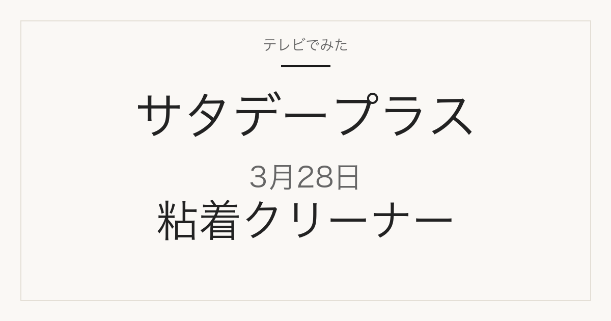

2026年3月28日（土）放送
サタプラ 粘着クリーナーランキング
「ひたすら試してランキング」で調査された5品

2026年3月28日放送のサタデープラス「ひたすら試してランキング」粘着クリーナーの1位は、無印良品「ヘッドが付け替えられるカーペットクリーナー」（番組掲載価格690円）です。全5品の番組掲載価格は438円から1,628円です。このうち5品は楽天市場で販売ページを確認できました（販売単位が番組掲載と異なる場合があります）。
この記事には広告・アフィリエイトリンクが含まれます。順位・商品名・番組掲載価格は番組公式情報で確認しています。価格は2026年3月28日時点の番組調べで、現在の販売価格・在庫・送料は販売先で確認してください。容量・入数は商品名から読み取れる範囲で記載し、確認できないものは「未確認」としています。
番組が調査した項目
- 粘着力
- 小回りのよさ
- 機能性
- コストパフォーマンス
- テープの切り取りやすさ
番組の順位は番組独自の調査によるもので、当サイトの評価ではありません。コストパフォーマンスが項目に含まれるため、上位が最安とは限りません。
1位／番組掲載価格 690円
無印良品
ヘッドが付け替えられるカーペットクリーナー

無印良品の自社商品で、無印良品の店舗や公式通販で扱われます。番組掲載と同じ単品です。無印良品公式楽天店では旧シリーズ名「掃除用品システム カーペットクリーナー」の表記ですが、商品番号(JAN)4550344831892は「ヘッドが付け替えられるカーペットクリーナー」と同一品と推定しています（muji.com 本体は未確認。JAN 4550344831892 と税込690円の一致による）。楽天価格 税込690円（2026-09-09 14:28確認、在庫数表示44）で番組掲載価格と一致。
楽天市場で商品情報を見る
2位／番組掲載価格 699円
ニトリ
簡単カーペットクリーナー ラクッカ2(強粘着)

ニトリの自社商品で、ニトリの店舗や公式通販で扱われます。番組掲載と同じ単品です。楽天掲載はブラック色（番組表記に色指定なし）。楽天価格 税込699円（2026-09-09 14:28確認、在庫数表示602）で番組掲載価格と一致。
楽天市場で商品情報を見る
3位／番組掲載価格 438円
アイリスオーヤマ
トルクル カーペットクリーナー NC-DH

メーカー商品で、スーパーや通販で扱われます。番組掲載と同じ単品です（型番NC-DH・ホワイト）。販売店はアイリスオーヤマ公式ではなくポムプラス。楽天価格 税込438円（2026-09-09 14:28確認、在庫数表示710）で番組掲載価格と一致。
楽天市場で商品情報を見る
4位／番組掲載価格 759円
KEYUCA
sooq サッと出し入れ 粘着クリーナー

KEYUCAの自社商品で、KEYUCAの店舗や公式通販で扱われます。番組掲載と同じ単品です（KEYUCA公式楽天店、「サッと」と「さっと」の表記揺れのみ）。楽天価格 税込759円（2026-09-09 14:28確認、在庫数表示212）で番組掲載価格と一致。
楽天市場で商品情報を見る
5位／番組掲載価格 1,628円
レック
激落ちくん 柄がたためるカーペットクリーナー ショート柄

メーカー商品で、スーパーや通販で扱われます。レック公式楽天店の1ページにショート(ホワイト)・ショート(グレー)・ロング(ホワイト)・ロング(グレー)の4バリエーションがまとまっています。番組掲載の「ショート柄」は購入時に「ショート」を選んでください。ショートは税込1,302円（2026-09-09 14:30確認、20%OFFセール表記中。番組掲載価格は1,628円）、ロングは税込1,918円。ショート(ホワイト)在庫数表示337・ショート(グレー)333。
楽天市場で商品情報を見る
出典・確認方法
MBS「サタプラ」ひたすら試してランキング 粘着クリーナー（2026年3月28日放送）
順位・商品名・番組掲載価格は2026年3月28日時点の番組公式ページによります。MBS公式サイトは直近の放送回のみ公開しているため、この回の公式ページは現在閲覧できません。上のリンクはインターネットアーカイブに保存された公式ページのコピーです。価格は放送時点の番組調べで、現在の販売価格・在庫・送料は販売先で確認してください。
公開：2026年9月9日／最終更新：2026年9月9日